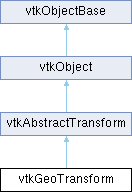

|
Etrek
|
|
Etrek
|
A transformation between two geographic coordinate systems. More...
#include <vtkGeoTransform.h>

Public Member Functions | |
| void | PrintSelf (ostream &os, vtkIndent indent) override |
| vtkTypeMacro (vtkGeoTransform, vtkAbstractTransform) | |
| void | TransformPoints (vtkPoints *src, vtkPoints *dst) override |
| void | TransformPointsNormalsVectors (vtkPoints *src, vtkPoints *dst, vtkDataArray *srcNms, vtkDataArray *dstNms, vtkDataArray *srcVrs, vtkDataArray *dstVrs, int nOptionalVectors=0, vtkDataArray **srcVrsArr=nullptr, vtkDataArray **dstVrsArr=nullptr) override |
| void | Inverse () override |
| vtkAbstractTransform * | MakeTransform () override |
| void | SetSourceProjection (vtkGeoProjection *source) |
| void | SetSourceProjection (const char *proj) |
| vtkGetObjectMacro (SourceProjection, vtkGeoProjection) | |
| vtkSetMacro (TransformZCoordinate, bool) | |
| vtkGetMacro (TransformZCoordinate, bool) | |
| void | SetDestinationProjection (vtkGeoProjection *dest) |
| void | SetDestinationProjection (const char *proj) |
| vtkGetObjectMacro (DestinationProjection, vtkGeoProjection) | |
| void | InternalTransformPoint (const float in[3], float out[3]) override |
| void | InternalTransformPoint (const double in[3], double out[3]) override |
| void | InternalTransformDerivative (const float in[3], float out[3], float derivative[3][3]) override |
| void | InternalTransformDerivative (const double in[3], double out[3], double derivative[3][3]) override |
| Public Member Functions inherited from vtkAbstractTransform | |
| vtkTypeMacro (vtkAbstractTransform, vtkObject) | |
| void | TransformPoint (const float in[3], float out[3]) |
| void | TransformPoint (const double in[3], double out[3]) |
| double * | TransformPoint (double x, double y, double z) VTK_SIZEHINT(3) |
| double * | TransformPoint (const double point[3]) VTK_SIZEHINT(3) |
| double * | TransformNormalAtPoint (const double point[3], const double normal[3]) VTK_SIZEHINT(3) |
| double * | TransformVectorAtPoint (const double point[3], const double vector[3]) VTK_SIZEHINT(3) |
| vtkAbstractTransform * | GetInverse () |
| void | SetInverse (vtkAbstractTransform *transform) |
| void | DeepCopy (vtkAbstractTransform *) |
| void | Update () |
| virtual int | CircuitCheck (vtkAbstractTransform *transform) |
| vtkMTimeType | GetMTime () override |
| void | Modified () override |
| void | UnRegister (vtkObjectBase *O) override |
| float * | TransformFloatPoint (float x, float y, float z) VTK_SIZEHINT(3) |
| float * | TransformFloatPoint (const float point[3]) VTK_SIZEHINT(3) |
| double * | TransformDoublePoint (double x, double y, double z) VTK_SIZEHINT(3) |
| double * | TransformDoublePoint (const double point[3]) VTK_SIZEHINT(3) |
| void | TransformNormalAtPoint (const float point[3], const float in[3], float out[3]) |
| void | TransformNormalAtPoint (const double point[3], const double in[3], double out[3]) |
| double * | TransformDoubleNormalAtPoint (const double point[3], const double normal[3]) VTK_SIZEHINT(3) |
| float * | TransformFloatNormalAtPoint (const float point[3], const float normal[3]) VTK_SIZEHINT(3) |
| void | TransformVectorAtPoint (const float point[3], const float in[3], float out[3]) |
| void | TransformVectorAtPoint (const double point[3], const double in[3], double out[3]) |
| double * | TransformDoubleVectorAtPoint (const double point[3], const double vector[3]) VTK_SIZEHINT(3) |
| float * | TransformFloatVectorAtPoint (const float point[3], const float vector[3]) VTK_SIZEHINT(3) |
| Public Member Functions inherited from vtkObject | |
| vtkBaseTypeMacro (vtkObject, vtkObjectBase) | |
| virtual void | DebugOn () |
| virtual void | DebugOff () |
| bool | GetDebug () |
| void | SetDebug (bool debugFlag) |
| void | PrintSelf (ostream &os, vtkIndent indent) override |
| void | RemoveObserver (unsigned long tag) |
| void | RemoveObservers (unsigned long event) |
| void | RemoveObservers (const char *event) |
| void | RemoveAllObservers () |
| vtkTypeBool | HasObserver (unsigned long event) |
| vtkTypeBool | HasObserver (const char *event) |
| vtkTypeBool | InvokeEvent (unsigned long event) |
| vtkTypeBool | InvokeEvent (const char *event) |
| std::string | GetObjectDescription () const override |
| unsigned long | AddObserver (unsigned long event, vtkCommand *, float priority=0.0f) |
| unsigned long | AddObserver (const char *event, vtkCommand *, float priority=0.0f) |
| vtkCommand * | GetCommand (unsigned long tag) |
| void | RemoveObserver (vtkCommand *) |
| void | RemoveObservers (unsigned long event, vtkCommand *) |
| void | RemoveObservers (const char *event, vtkCommand *) |
| vtkTypeBool | HasObserver (unsigned long event, vtkCommand *) |
| vtkTypeBool | HasObserver (const char *event, vtkCommand *) |
| template<class U, class T> | |
| unsigned long | AddObserver (unsigned long event, U observer, void(T::*callback)(), float priority=0.0f) |
| template<class U, class T> | |
| unsigned long | AddObserver (unsigned long event, U observer, void(T::*callback)(vtkObject *, unsigned long, void *), float priority=0.0f) |
| template<class U, class T> | |
| unsigned long | AddObserver (unsigned long event, U observer, bool(T::*callback)(vtkObject *, unsigned long, void *), float priority=0.0f) |
| vtkTypeBool | InvokeEvent (unsigned long event, void *callData) |
| vtkTypeBool | InvokeEvent (const char *event, void *callData) |
| virtual void | SetObjectName (const std::string &objectName) |
| virtual std::string | GetObjectName () const |
| Public Member Functions inherited from vtkObjectBase | |
| const char * | GetClassName () const |
| virtual vtkTypeBool | IsA (const char *name) |
| virtual vtkIdType | GetNumberOfGenerationsFromBase (const char *name) |
| virtual void | Delete () |
| virtual void | FastDelete () |
| void | InitializeObjectBase () |
| void | Print (ostream &os) |
| void | Register (vtkObjectBase *o) |
| int | GetReferenceCount () |
| void | SetReferenceCount (int) |
| bool | GetIsInMemkind () const |
| virtual void | PrintHeader (ostream &os, vtkIndent indent) |
| virtual void | PrintTrailer (ostream &os, vtkIndent indent) |
| virtual bool | UsesGarbageCollector () const |
Static Public Member Functions | |
| static vtkGeoTransform * | New () |
| static int | ComputeUTMZone (double lon, double lat) |
| static int | ComputeUTMZone (double *lonlat) |
| Static Public Member Functions inherited from vtkObject | |
| static vtkObject * | New () |
| static void | BreakOnError () |
| static void | SetGlobalWarningDisplay (vtkTypeBool val) |
| static void | GlobalWarningDisplayOn () |
| static void | GlobalWarningDisplayOff () |
| static vtkTypeBool | GetGlobalWarningDisplay () |
| Static Public Member Functions inherited from vtkObjectBase | |
| static vtkTypeBool | IsTypeOf (const char *name) |
| static vtkIdType | GetNumberOfGenerationsFromBaseType (const char *name) |
| static vtkObjectBase * | New () |
| static void | SetMemkindDirectory (const char *directoryname) |
| static bool | GetUsingMemkind () |
Protected Member Functions | |
| void | InternalDeepCopy (vtkAbstractTransform *) override |
| void | InternalTransformPoints (double *ptsInOut, vtkIdType numPts, int stride) |
| Protected Member Functions inherited from vtkAbstractTransform | |
| virtual void | InternalUpdate () |
| Protected Member Functions inherited from vtkObject | |
| void | RegisterInternal (vtkObjectBase *, vtkTypeBool check) override |
| void | UnRegisterInternal (vtkObjectBase *, vtkTypeBool check) override |
| void | InternalGrabFocus (vtkCommand *mouseEvents, vtkCommand *keypressEvents=nullptr) |
| void | InternalReleaseFocus () |
| Protected Member Functions inherited from vtkObjectBase | |
| virtual void | ReportReferences (vtkGarbageCollector *) |
| vtkObjectBase (const vtkObjectBase &) | |
| void | operator= (const vtkObjectBase &) |
Protected Attributes | |
| vtkGeoProjection * | SourceProjection |
| vtkGeoProjection * | DestinationProjection |
| bool | TransformZCoordinate |
| Protected Attributes inherited from vtkAbstractTransform | |
| float | InternalFloatPoint [3] |
| double | InternalDoublePoint [3] |
| Protected Attributes inherited from vtkObject | |
| bool | Debug |
| vtkTimeStamp | MTime |
| vtkSubjectHelper * | SubjectHelper |
| std::string | ObjectName |
| Protected Attributes inherited from vtkObjectBase | |
| std::atomic< int32_t > | ReferenceCount |
| vtkWeakPointerBase ** | WeakPointers |
Additional Inherited Members | |
| Static Protected Member Functions inherited from vtkObjectBase | |
| static vtkMallocingFunction | GetCurrentMallocFunction () |
| static vtkReallocingFunction | GetCurrentReallocFunction () |
| static vtkFreeingFunction | GetCurrentFreeFunction () |
| static vtkFreeingFunction | GetAlternateFreeFunction () |
A transformation between two geographic coordinate systems.
Describe a geographic transform.
This class takes two geographic projections and transforms point coordinates between them.
Describe a geographic transform either using PROJ strings or using vtkGeoProjection classes.
WARNING: Normal vectors have to be removed before a transform using this class otherwise the transform will be a no-operation. See vtkGeoTransform::InternalTransformDerivative.
|
static |
Computes Universal Transverse Mercator (UTM) zone given the longitude and latitude of the point. It correctly computes the zones in the two exception areas. It returns an integer between 1 and 60 for valid long lat, or 0 otherwise.
|
overrideprotectedvirtual |
Perform any subclass-specific DeepCopy.
Reimplemented from vtkAbstractTransform.
|
overridevirtual |
Implements vtkAbstractTransform.
|
overridevirtual |
This will transform a point and, at the same time, calculate a 3x3 Jacobian matrix that provides the partial derivatives of the transformation at that point. This method does not call Update. Meant for use only within other VTK classes.
Implements vtkAbstractTransform.
|
overridevirtual |
Implements vtkAbstractTransform.
|
overridevirtual |
This will calculate the transformation without calling Update. Meant for use only within other VTK classes.
Implements vtkAbstractTransform.
|
overridevirtual |
Invert the transformation.
Implements vtkAbstractTransform.
|
overridevirtual |
Make another transform of the same type.
Implements vtkAbstractTransform.
|
overridevirtual |
Methods invoked by print to print information about the object including superclasses. Typically not called by the user (use Print() instead) but used in the hierarchical print process to combine the output of several classes.
Reimplemented from vtkAbstractTransform.
| void vtkGeoTransform::SetDestinationProjection | ( | vtkGeoProjection * | dest | ) |
The target geographic projection, which can be set using an external vtkGeoProjection, or using a proj string, in which case the projection is allocated internally.
| void vtkGeoTransform::SetSourceProjection | ( | vtkGeoProjection * | source | ) |
The source geographic projection, which can be set using an external vtkGeoProjection, or using a proj string, in which case the projection is allocated internally.
Transform many points at once.
Reimplemented from vtkAbstractTransform.
|
overridevirtual |
Another method to transform points, normals, and vectors all at once. Please note that this filter only implements point transformations, so attempts to transform normals or vectors will cause an error.
Reimplemented from vtkAbstractTransform.
| vtkGeoTransform::vtkSetMacro | ( | TransformZCoordinate | , |
| bool | ) |
If true, we transform (x, y, z) otherwise we transform (x, y) and leave z unchanged. Default is false. This is used when converting from/to cartesian (cart) coordinate, but it could be used for other transforms as well.
WARNING: 3D transforms work only if the transform is specified using PROJ strings or using vtkGeoProjection that are specified using PROJ strings.